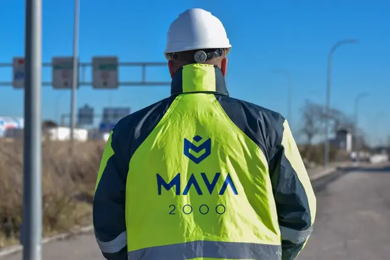
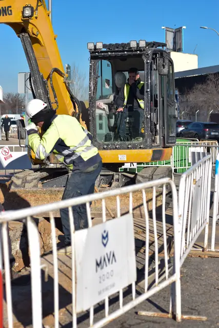
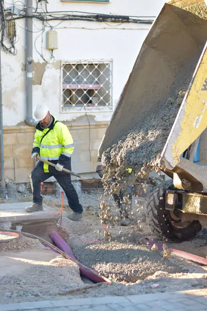
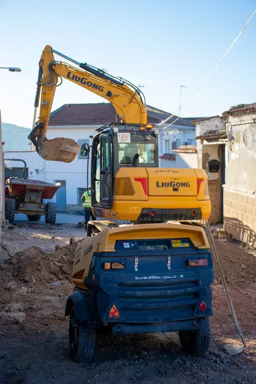
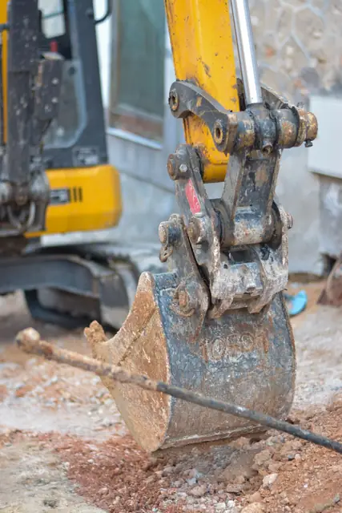

Hoja 04 · Empresa
Quiénes somos.
Mava 2000 es la constructora de Grupo Soto. Desde 1997 hacemos calles, plazas, parques y edificios, sobre todo para ayuntamientos de Madrid y Guadalajara.
Desde 1997
En Mava 2000 llevamos casi treinta años haciendo obra pública. Calles que se renuevan de fachada a fachada, plazas, parques, cementerios, pistas deportivas y las redes que van debajo. Es obra que los vecinos estrenan al día siguiente, así que la planificamos para que llegue a tiempo, sin sustos y mejor de lo que estaba.





- 01
Un jefe de obra fijo en cada obra, que responde ante la dirección facultativa y ante el técnico municipal.
- 02
Máquina, camiones y hormigón del grupo: no dependemos de terceros para arrancar ni para cumplir el plazo.
- 03
Calidad, medio ambiente y seguridad certificados con ISO 9001, 14001 y 45001.
Cómo trabajamos
Una obra pública se planifica.
Cada obra arranca con su planificación por semanas, la misma que entregamos a la dirección facultativa. Así sabemos, y sabe el ayuntamiento, qué se hace cada semana y cuándo se abre la calle.
-
ISO 9001
Calidad
Cada material y cada unidad de obra se controla y se ensaya, y queda registrado para la recepción.
-
ISO 14001
Medio ambiente
Los residuos se separan en la obra y van a gestor autorizado; las tierras limpias se reutilizan.
-
ISO 45001
Seguridad y salud
Plan de seguridad en cada obra, zona vallada y señalizada, y paso seguro para los vecinos.
Grupo Soto
Con un grupo entero detrás.
Mava es la constructora de Grupo Soto. Cuando la obra necesita maquinaria, camiones, hormigón o un sitio donde llevar las tierras, lo pone el propio grupo: menos esperas y un solo responsable.
Conocer Grupo Soto- StamMaquinaria
- Soto EcotransTransporte
- Reciclados SotoHormigón
- ReversoTierras y residuos
- ÓrbitaIngeniería y licencias
- ZentromachineCompraventa de maquinaria
Hoja 05 · Pedir oferta